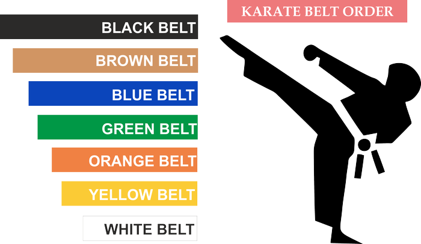

mikado-sergey1@ukr.net
095-317-48-78
Каратэ клуб «МИКАДО» был основан в 1990 году. За годы существования клуба было подготовлено большое количество спортсменов высокого класса, чемпионов и призеров областных и всеукраинских соревнований. Ученики клуба ежегодно проходят международную аттестацию. Сэнсэй и старшие ученики постоянно повышают свой технический уровень на международных семинарах японских мастеров. В летнее время клуб организовывает выезд детей в спортивно-оздоровительные лагеря.
Основателем и главным тренером является Мазалов Сергей Иванович, неоднократный чемпион Украины, призер Кубка мира, международный инструктор с экспертной лицензией JKS, судья национальной категории, 4 дан JKS, выпускник Харьковской государственной академии физической культуры, тренерский стаж - 30 лет
Мазалова Марина Сергеевна - мастер спорта международного класса, неоднократный призер Чемпионатов Европы и мира, выпускница Харьковской государственной академии физической культуры, тренерский стаж - 10 лет
На первый взгляд занятия боевыми искусствами не выглядят хорошей идеей, поскольку, согласно многим фильмам, телевизионным шоу, видео- и компьютерным играм, они прославляют и поощряют насилие. Однако боевые искусства на самом деле далеки от этого, более того, занятия единоборствами позволяют детям получать огромную пользу для физического и личностного развития, укрепляют их здоровье.
Каратэ может предложить своим учащимся большое спортивное будущее. Этому способствует соответствующая квалификация тренеров, использование единой системы подготовки спортсменов при индивидуальном подходе к личности ребенка. Оборудование для каратэ делится на 2 вида: для ката и для кумитэ .
Также есть множество разделов каратэ, как спортивных, так и традиционных, и каждый ребёнок сможет выбрать для себя тот раздел, который ему больше подходит и нравится.
Ребенок по мере обучения боевому искусству переходит на более высокий уровень мастерства и получает очередной кю (пояс), соответствующий каждому уровню. В системе поясов новичок начинает с белого пояса, а затем добивается поясов разных цветов.
Очень важно с первых тренировок научиться правильно завязывать пояс. В карате, например, существует система ученических (кю) и мастерских (даны) степеней. Каждой степени соответствует пояс определённого цвета. Обычная система предусматривает для начинающего белый пояс, который темнеет с ростом мастерства. Черный пояс - именной. На нем вышивают имя владельца и его дан.
Ждём тебя в нашей спортивной семье!
mikado-sergey1@ukr.net
095-317-48-78